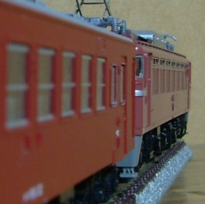

旧型客車とその仲間たち

旧型客車を中心に、その同時代にいた車両をNゲージ鉄道模型で集めています。
ほんとうはレイアウトを作りたいのですが、
まずは作りためている客車を集めて紹介します。
ほんとうはレイアウトを作りたいのですが、
まずは作りためている客車を集めて紹介します。
更新履歴
| 2020.04.30 |
工作日記更新 オユ14とマニ44がやってきました。 |
| 2020.04.25 |
D51200追加 やまぐち号です。 |
| 2020.03.13 |
EF80追加 気分は常磐線。 |
| 2020.01.03 |
C57 1追加 SLの加工に手を出しました…。 |
| 2019.09.22 |
EF64-1000更新。 スカート周りをにぎやかにしました。 |
| 2019.08.19 |
ED71追加。 |
| 2019.03.07 |
東北の交流機たち更新。エアホースを付けました。 |
| 2019.03.04 |
EF81(KATO)追加。 |
| 2018.12.31 |
信号システム(駅：警戒現示)追加。 |
| 2018.11.24 |
自動信号システム(駅)更新。ようやく形に。 |
| 2018.10.23 | 部品たちに、タブレットキャッチャー追加。 |
| 2018.10.20 |
トップページのレイアウトを更新しました。 キハ20・52追加。 |
| 2018.10.02 | キハ82系(トミックス)更新。 |
| 2018.09.10 |
キハ82系(トミックス)追加。
119系追加。 |
| 2018.05.13 | キハ58系(KATOリニューアル)追加。整備に時間がかかりました。 |
| 2017.12.16 |
101系中央線追加。115系以外の電車が久しぶり? |
| 2017.11.11 |
115系300番台 湘南色追加。115系揃ってます。 |
| 2017.10.03 |
115系300番台 山スカ更新。KE76ネタです。 |
| 2017.09.26 |
工作日記更新。プチリニューアル。 |
| 2017.09.26 |
キハ58更新。ディーゼルカーが続きます。 |
| 2017.08.17 |
キハ40新規作成。首都圏色ブームで。 |
| 2017.08.06 |
キハ23・キハ45新規作成。首都圏色も買いました。 |
| 2017.07.19 |
DF91更新。久しぶりにいじりました。 |
| 2017.07.18 |
自動信号システム更新。はやりの… |
| 2017.06.04 |
自動信号システム更新。PWMコントローラ対応。 |
| 2017.05.28 |
自動信号システム更新。減速現示タイプも、追加しました。 |
| 2017.05.09 |
自動信号システム作成。信号好きです。 |
| 2017.04.16 |
キハ91更新。ディーゼルカーらしくなった? |
| 2017.04.02 |
キハ91追加。 |
| 2017.03.21 |
オハフ33更新。 |
一応注記…
当ページに記載する工法/技法を実施されて事故・故障等が発生しても、
当方は一切責任を負いかねますので予めご了承ください。